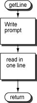

The relevant section is filled in, below.
loop: # get a line
la $a0,line # argument: address of buffer
li $a1,132 # argument: length of buffer
jal getline # get line from user
la $a0,line # if "Q"
jal testEnd # return to caller
beqz $v0,endloop
# convert to capitals
la $a0,line # argument: address of buffer
li $a1,132 # argument: length of buffer
jal convert # convert
getLine
Subroutine
getLine
reads a line into a buffer.
The buffer is in the data section of the caller.
The address of the buffer is passed as a parameter.

# getLine -- read in a line of user input
#
# on entry:
# $a0 -- address of input buffer
# $a1 -- length of buffer
#
# on exit:
# no return values
.text
.globl getLine
getLine:
move $t0,$a0 # save buffer address
la $a0,prompt # prompt the user
li $v0,4 # service 4
syscall
move $a0,$t0 # restore buffer address
li $v0,8 # service 8
syscall # read in a line to the buffer
jr $ra # return to caller
.data
prompt:
.asciiz ">"
Notice how getLine reads data into
an input buffer defined externally to itself.
The parameters in
$a0 and
$a1 specify this buffer.
It would be a design mistake to have getLine
read into its own buffer
or to hard-code the symbolic address of a buffer in another subroutine.
The buffer address parameter and the length parameter are similar to the parameters used in many "C" functions. Study this example to help in your future (or present) understanding of "C" pointer variables.
Does getLine need to store a return address on the stack?